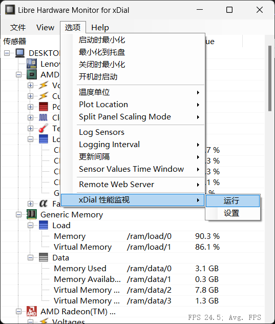

Windows 性能监视
下载主机端程序 LibreHardwareMonitor_for_xDial.zip ，全部解压 后运行 LibreHardwareMonitor_for_xDial.exe（可能需要管理员权限）

备注
该软件需要 .NET 4.7.2 或以上版本支持，Windows 7 以及更早的系统可能需要自行 下载安装 .NET Framework 4.7 运行时
目前作者对该软件与 xDial 相关的菜单做了汉化，您可以在软件中看到主机的许多性能指标。您还可以在 选项 菜单里选择 开机启动、 最小化到托盘、更新间隔 等。
找到 CPU 负载（Load → CPU Total）对应的指标，单击右键 → 选择 复制传感器 ID

点击菜单 选项 → xDial 性能监视 → 设置

在对话框中将已复制的传感器 ID 粘贴到 CPU 一栏，用同样的方法找到并填入各项性能指标对应的传感器 ID（没有的可以放空）。还需填入 xDial 设备对应的 IP 地址(可在设备的性能监视界面中查看)。最后点击 确认 关闭对话框

点击菜单 选项 → xDial 性能监视 → 运行，此时软件会尝试连接 xDial 设备。
同时，请确保设备的性能监视功能也在开启状态。